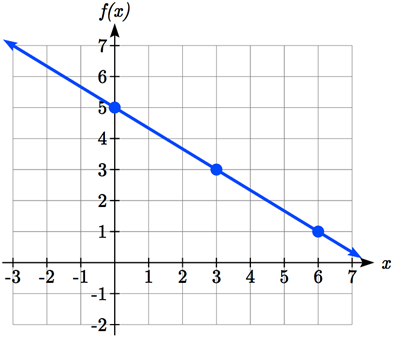
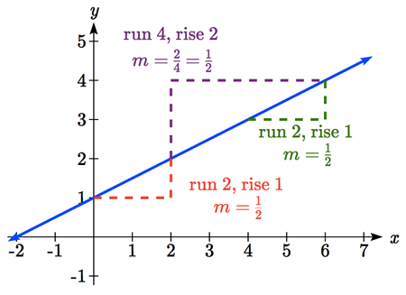
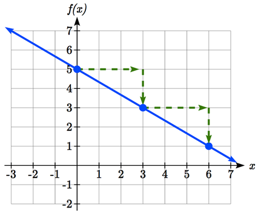
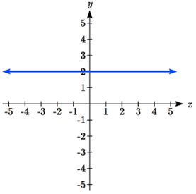
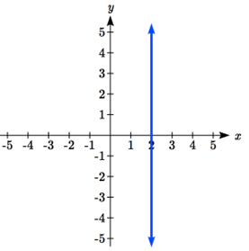
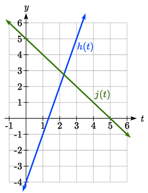

When we are working with a new function, it is useful to know as much as we can about the function: its graph, where the function is zero, and any other special behaviors of the function. We will begin this exploration of linear functions with a look at graphs.
Objectives:Important Topics of this Section
Methods for graphing linear functions
Horizontal intercepts of linear functions
Horizontal lines
Vertical lines
Parallel lines
Perpendicular lines
Intersecting lines
Subsection2.2.1Basics of Graphing Linear Functions
When graphing a linear function, there are two basic ways to graph it:
List2.2.1.Ways of Graphing Linear Functions
By plotting points (at least 2) and drawing a line through the points
By using the initial value (output when \(x = 0\)) and constant rate of change (slope)
Example2.2.2.
Graph \(f(x)=5-\dfrac{2}{3}x\) by plotting points.
Solution.
In general, we evaluate the function at two or more inputs to find at least two points on the graph. Usually, it is best to pick input values that will "work nicely" in the equation. In this equation, multiples of 3 will work nicely due to the \(\dfrac{2}{3}\) in the equation, and of course using \(x = 0\) to get the vertical intercept. Evaluating \(f(x)\) at \(x =\) 0, 3 and 6:
\(f(0)=5-\dfrac{2}{3}(0)=5\text{,}\)
\(f(3)=5-\dfrac{2}{3}(3)=3\text{,}\)
and \(f(6)=5-\dfrac{2}{3}(6)=1\text{.}\)
These evaluations tell us that the points \((0,5)\text{,}\)\((3,3)\text{,}\) and \((6,1)\) lie on the graph of the line. Plotting these points and drawing a line through them gives us the graph.

Figure2.2.3.Graph of \(f(x)\)
When using the initial value and rate of change to graph, we need to consider the graphical interpretation of these values. Remember the initial value of the function is the output when the input is zero, so in the equation \(f(x)=b+mx\text{,}\) the graph includes the point \((0, b)\text{.}\) On the graph, this is the vertical intercept - the point where the graph crosses the vertical axis.
For the constant rate of change, it is helpful to recall that we calculated this value as
\begin{equation*}
m=\dfrac{\text{change of output/dependent quantity}}{\text{change of input/independent quantity}}.
\end{equation*}
From a graph of a line, this tells us that if we divide the vertical difference of the function outputs by the horizontal difference of the inputs, we will obtain the constant rate of change, also called slope of the line. Notice that this ratio will calculate the same constant rate of change regardless of which two points we use.

Definition2.2.4.Graphical Interpretation of a Linear Equation.
Graphically, in the equation \(f(x)=b+mx\text{,}\)
\(b\) is the vertical intercept of the graph and tells us we can start our graph at \((0, b)\)
\(m\) is the slope of the line and tells us how much we need to increase our output every time we increase the input by 1. We can also generalize this idea to understand that for any change in the input, the corresponding change in the output will be \(m\) times as large. I.e.
\begin{equation*}
\text{change of output/dependent quantity}=m\times \text{(change of input/independent quantity)}.
\end{equation*}
Once we have at least 2 points, we can sketch the line of the function by extending the graph of the line to the left and right.
Example2.2.5.
Graph \(f(x)=5-\dfrac{2}{3}x\) using the vertical intercept and slope.
Solution.
The vertical intercept of the function is \((0, 5)\text{,}\) giving us a point on the graph of the line.
The slope is \(\dfrac{-2}{3}\text{.}\) This tells us that for every 3 unit increase in the input , the output value will decrease by 2 units.
In graphing, we can use this by first plotting our vertical intercept on the graph, then using the slope to find a second point. From the initial value \((0, 5)\) the slope tells us that if we move to the right 3, we will move down 2, moving us to the point \((3, 3)\text{.}\) We can continue this again to find a third point at \((6, 1)\text{.}\) Finally, extend the line to the left and right, containing these points.

Figure2.2.6.Graph of \(f(x)\)
Checkpoint2.2.7.
Consider that the slope \(\dfrac{-2}{3}\) could also be written as \(\dfrac{2}{-3}\text{.}\) Using \(\dfrac{2}{-3}\text{,}\) find another point on the graph that has a negative \(x\) value.
In addition to understanding the basic behavior of a linear function (increasing or decreasing, recognizing the slope and vertical intercept), it is often helpful to know the horizontal intercept of the function - where it crosses the horizontal axis.
Definition2.2.8.Horizontal Intercepts.
The horizontal intercept of the function is where the graph crosses the horizontal axis. If a function has a horizontal intercept, you can always find it by solving \(f(x) = 0\text{.}\)
Example2.2.9.
Find the horizontal intercept of \(f(x)=-3+\dfrac{1}{2}x\text{.}\)
Solution.
Setting the function equal to zero to find what input will put us on the horizontal axis,
Thus, the graph crosses the horizontal axis at (6,0)
There are two special cases of lines: a horizontal line and a vertical line. In a horizontal line like the one graphed below, notice that between any two points, the change in the outputs is 0. In the slope equation, the numerator will be 0, resulting in a slope of 0. Using a slope of 0 in the \(f(x)=b+mx\text{,}\) the equation simplifies to \(f(x)=b\text{.}\)

Figure2.2.10.A horizontal line
Notice a horizontal line has a vertical intercept, but no horizontal intercept (unless it’s the line \(f(x) = 0\)).
In the case of a vertical line, notice that between any two points, the change in the inputs is zero. In the slope equation, the denominator will be zero, and you may recall that we cannot divide by the zero; the slope of a vertical line is undefined. You might also notice that a vertical line is not a function. To write the equation of vertical line, we simply write input=value, like \(x=a\text{.}\) Notice a vertical line has a horizontal intercept, but no vertical intercept (unless it’s the line \(x = 0\)).

Figure2.2.11.A vertical line
Definition2.2.12.Horizontal and Vertical Lines.
Horizontal lines have equations of the form \(f(x)=b\text{.}\) Vertical lines have equations of the form \(x = a\text{.}\)
Example2.2.13.
Write an equation for the horizontal line graphed above.
Solution.
This line would have equation \(f(x)=2\text{.}\)
Example2.2.14.
Write an equation for the vertical line graphed above.
Solution.
This line would have equation \(x=2\text{.}\)
Subsection2.2.2Parallel and Perpendicular Lines
When two lines are graphed together, the lines will be parallel if they are increasing at the same rate - if the constant rates of change are the same. In this case, the graphs will never cross (unless they’re the same line).
Definition2.2.15.Parallel Lines.
Two lines are parallel if the slopes are equal (or, if both lines are vertical).
In other words, given two linear equations \(f(x)=b+m_{1} x\) and \(g(x)=b+m_{2} x\text{,}\) the lines will be parallel if \(m_{1}=m_{2}\text{.}\)
Example2.2.16.
Find a line parallel to \(f(x)=6+3x\) that passes through the point \((3, 0)\text{.}\)
Solution.
We know the line we’re looking for will have the same slope as the given line, \(m = 3\text{.}\) Using this and the given point, we can solve for the new line’s vertical intercept. Starting with \(g(x)=b+3x\text{,}\) we can use the point \((3, 0)\) to get \(0=b+3(3)\text{,}\) and thus \(b=-9\text{.}\)
The line we’re looking for is \(g(x)=-9+3x\text{.}\)
If two lines are not parallel, one other interesting possibility is that the lines are perpendicular, which means the lines form a right angle (90 degree angle - a square corner) where they meet. In this case, the slopes when multiplied together will equal -1. Solving for one slope leads us to the definition:
Definition2.2.17.Perpendicular Lines.
Given two linear equations \(f(x)=b_{1}+m_{1} x\) and \(g(x)=b_{2}+m_{2} x\) The lines will be perpendicular if \(m_{1}\times m_{2}=-1\text{,}\) and so \(m_{2}=\dfrac{-1}{m_1}\text{.}\) We often say the slope of a perpendicular line is the "negative reciprocal" of the other line’s slope.
Example2.2.18.
Find the slope of a line perpendicular to a line with:
a slope of 2
a slope of -4
a slope of \(\dfrac{2}{3}\)
Solution.
If the original line had slope 2, the perpendicular line’s slope would be \(m_{2}=\dfrac{-1}{2}\text{.}\) If the original line had slope -4, the perpendicular line’s slope would be \(m_{2}=\dfrac{-1}{-4}=\dfrac{1}{4}\text{.}\) If the original line had slope \(\dfrac{2}{3}\text{,}\) the perpendicular line’s slope would be \(m_{2}=\dfrac{-1}{\frac{2}{3}}=\dfrac{-3}{2}\text{.}\)
Example2.2.19.
Find the equation of a line perpendicular to \(f(x)=6+3x\) and passing through the point \((3, 0)\text{,}\)
Solution.
The original line has slope \(m = 3\text{.}\) The perpendicular line will have slope \(m=\dfrac{-1}{3}\text{.}\) Using this and the given point, we can find the equation for the line. \(g(x)=b-\dfrac{1}{3}x\text{,}\) and at \((3, 0)\text{,}\)\(0=b-\dfrac{1}{3}(3)\text{,}\) so \(b=1\text{.}\)
The line we’re looking for is \(g(x)=1-\dfrac{1}{3}x\text{.}\)
Checkpoint2.2.20.
Given the line \(h(t)=-4+2t\text{,}\) find an equation for the line passing through \((0, 0)\) that is:
parallel to \(h(t)\)
perpendicular to \(h(t)\)
Example2.2.21.
A line passes through the points \((-2, 6)\) and \((4, 5)\text{.}\) Find the equation of a perpendicular line that passes through the point \((4, 5)\text{.}\)
Solution.
From the two given points on the reference line, we can calculate the slope of that line: \(m_{1}=\dfrac{5-6}{4-(-2)}=\dfrac{-1}{6}\text{.}\) The perpendicular line will have slope \(m_{2}=\dfrac{-1}{\frac{-1}{6}}=6\text{.}\)
We can then solve for the vertical intercept that makes the line pass through the desired point: \(g(x)=b+6x\text{,}\) then at \((4, 5)\text{,}\)\(5=b+6(4)\) so \(b=-19\text{.}\) Giving the line \(g(x)=-19+6x\text{.}\)
Subsection2.2.3Intersections of Lines
The graphs of two lines will intersect if they are not parallel. They will intersect at the point that satisfies both equations. To find this point when the equations are given as functions, we can solve for an input value so that \(f(x)=g(x)\text{.}\) In other words, we can set the formulas for the lines equal, and solve for the input that satisfies the equation.
Example2.2.22.
Find the intersection of the lines \(h(t)=3t-4\) and \(j(t)=5-t\text{.}\)
Solution.
Setting \(h(t)=j(t)\) and solving for \(t\text{,}\) we get
\begin{equation*}
3t-4=5-t,
\end{equation*}
\begin{equation*}
4t=9,
\end{equation*}
\begin{equation*}
t=\dfrac{9}{4}.
\end{equation*}
This tells us the lines intersect when the input is \(\dfrac{9}{4}\text{.}\) We can then find the output value of the intersection point by evaluating either function at this input: \(j(\dfrac{9}{4})=5-\dfrac{9}{4}=\dfrac{11}{4}.\)
These lines intersect at the point \((\dfrac{9}{4},\dfrac{11}{4})\text{.}\) Looking at the graph, this result seems reasonable.

Two parallel lines can also intersect if they happen to be the same line. In that case, they intersect at every point on the lines.
Checkpoint2.2.23.
Using the previous example, answer the following for the function \(h\text{:}\)
Vertical intercept coordinates
Horizontal intercepts coordinates
Slope
Is \(j\) parallel or perpendicular to \(h\) (or neither)?
Is \(h\) an Increasing or Decreasing function (or neither)?
Write a transformation description from the identity toolkit function \(f(x) = x\)
Finding the intersection allows us to answer other questions as well, such as discovering when one function is larger than another.
Example2.2.24.
Using the functions from the previous example, for what values of \(t\) is \(h(t)>j(t)\text{?}\)
Solution.
To answer this question, it is helpful first to know where the functions are equal, since that is the point where \(h(t)\) could switch from being greater to smaller than \(j(t)\) or vice-versa. From the previous example, we know the functions are equal at \(t=\dfrac{9}{4}\text{.}\) By examining the graph, we can see that \(h(t)\text{,}\) the function with positive slope, is going to be larger than the other function to the right of the intersection. So \(h(t)>j(t)\) when \(t>\dfrac{9}{4}\text{.}\)
Subsection2.2.4Answers
Checkpoint2.2.25.
Answers to Checkpoint Exercises
Answer.
\((-3,7)\) found by starting at the vertical intercept, going up 2 units and 3 in the negative horizontal direction. You could have also answered, \((-6, 9)\) or \((-9, 11)\) etc.